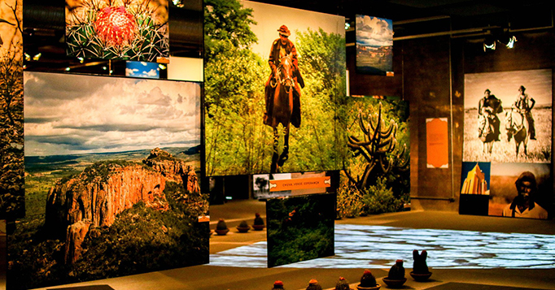

<html lang="pt-BR"></html>
<head>
    <meta charset="UTF-8">
    <meta name="viewport" content="width=device-width, initial-scale=1.0">
    <title>Recife Antigo</title>
</head>
<body>

<header>
    <h1>Descubra mais pontos turísticos do Recife Antigo</h1>
</header>

<main>
    <section>
        <a href="outros_pontos_turisticos.html" > <h2>MARCO ZERO</h2></a>
        <p>A partir do <strong> Marco Zero</strong> você pode conhecer:  </p>
        
        <h3>Rua do Bom Jesus</h3>
        <p>Com sua via de paralelepípedos, casarões bem conservados e muita história, um cartão-postal do Bairro do Recife figura na quarta posição das 30 ruas mais bonitas do mundo.A Rua do Bom Jesus também frequenta a lista anual da revista norte-americana Architectural Digest desde 2019. Conhecida inicialmente como Rua do Bode na época da ocupação holandesa - a Bokestraet - e depois como Rua dos Judeus, seu início data de 1636. Era a principal de ligação entre Recife e Olinda e abrigava a sinagoga, a primeira das Américas, que encontra-se aberta para visitação.   </p>
        <p></p>
        <h3>Centro Cultural Cais do Sertão</h3>
        <p>Com recursos de tecnologia inovadores, automação e interatividade, além da leitura generosa de cineastas, escritores, artesãos, artistas plásticos, artistas visuais e músicos de todo o país, o museu Cais do Sertão apresenta os fortes contrastes que marcam a vida nos sertões nordestinos, proporcionando aos visitantes uma experiência de imersão nesse universo.</p>
        <p></p>
    </section>
</main>

<footer>
    <p>&copy; 2024 Visite Recife - Todos os direitos reservados.</p>
</footer>

</body>
</html>